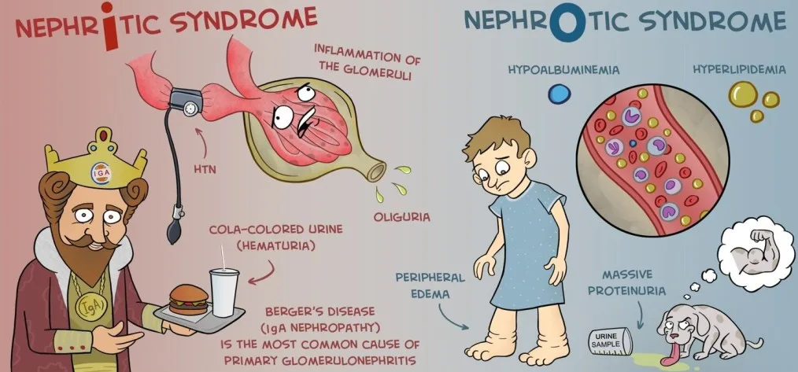
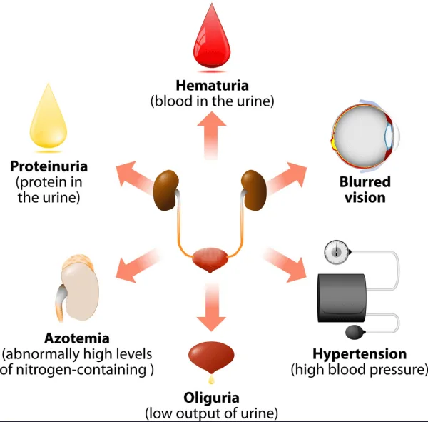
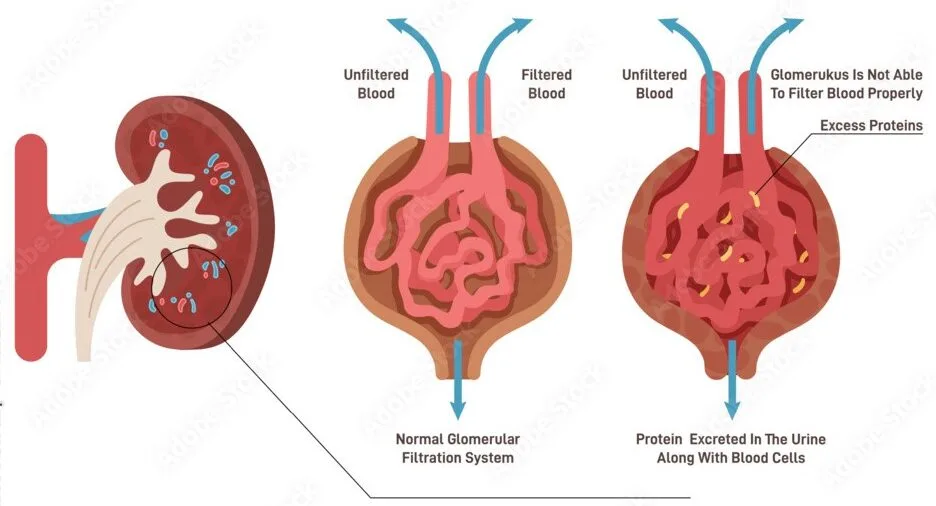
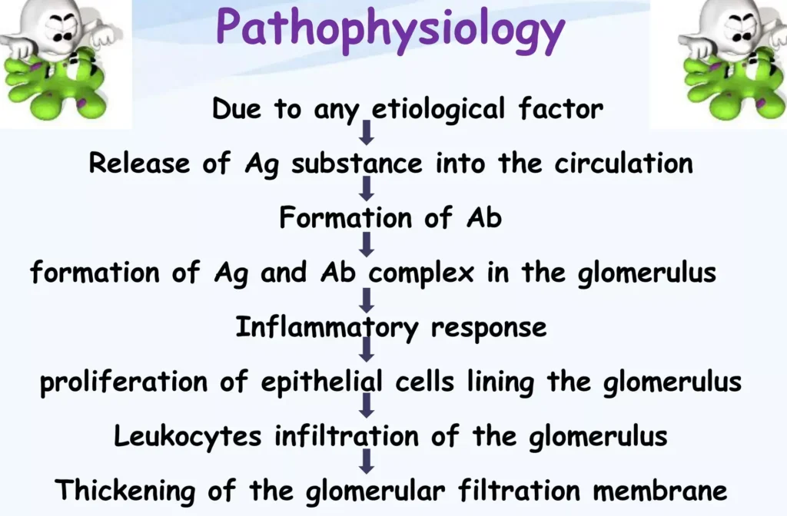
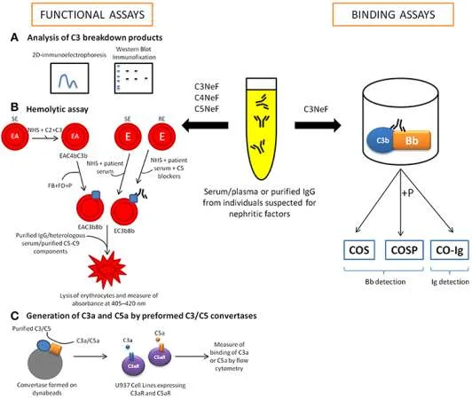
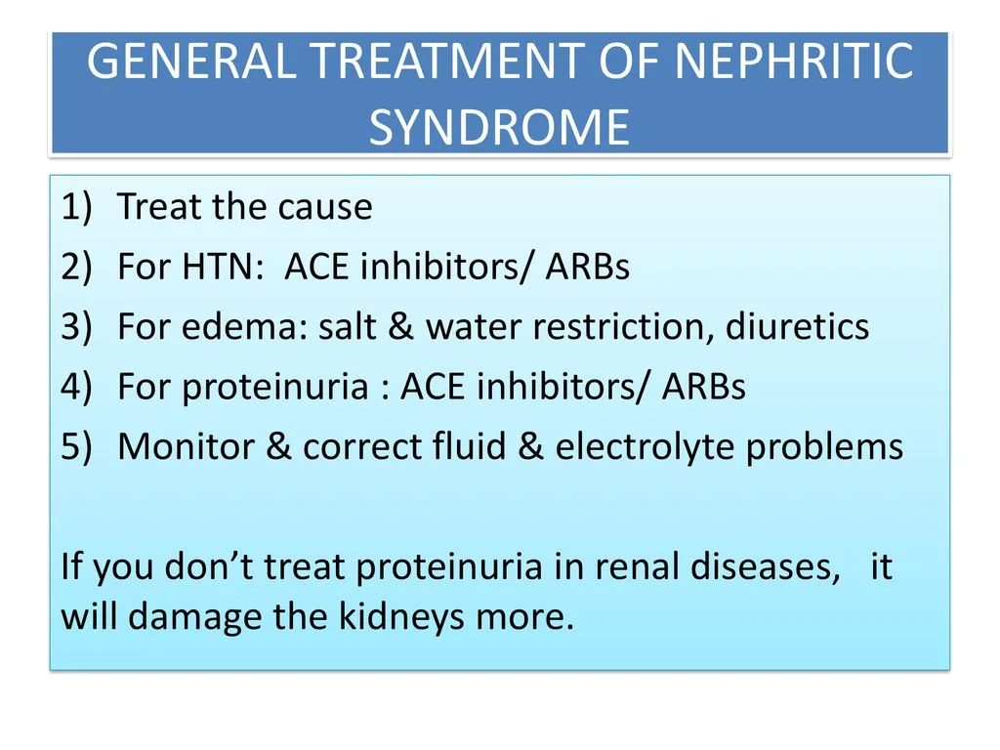
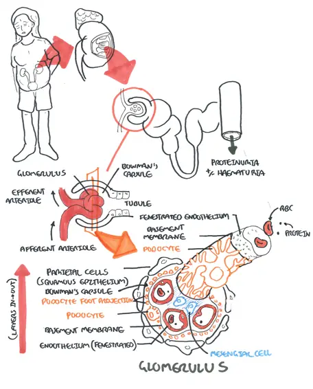

Expanded Nursing Uganda Explanation
Nephritic Syndrome should be understood beyond a short definition. Link the concept to patient history, focused assessment, common risks, nursing priorities, documentation and evaluation of outcomes.
01 NEPHRITIC SYNDROME.
Nephritic syndrome is a group of disorders that cause swelling or inflammation of the internal kidney structures (specifically the glomeruli ) leading to acute onset of hematuria , proteinuria , hypertension , oedema and oliguria .
****
Acute Nephritic Syndrome
This is a syndrome of acute glomerular injury / inflammation characterized by fever , abrupt onset of haematuria , proteinuria , high blood pressure and oliguria .
This can also be referred to as Acute Glomerulonephritis
02 Signs and Symptoms
Historically, nephritic syndrome has been described to present with The classical triad of;
- Hematuria : This is the presence of blood in the urine. It is usually microscopic, meaning that it can only be seen under a microscope. However, in some cases, the hematuria may be visible to the naked eye, causing the urine to appear pink or red.
- Hypertension : This is high blood pressure. It is caused by the kidneys’ inability to properly regulate fluid and electrolyte balance.
- Edema : This is swelling in the body’s tissues. It is caused by the kidneys’ inability to properly excrete fluid.
Nephritic syndrome is also characterized by PHAROH
- P : Proteinuria ( Proteins in the urine ): Small amounts of proteins are lost in the urine but this is usually trivial ( < 3.5g/day )
- H : Hematuria ( Blood in the urine ) slight giving the urine smoky appearance
- A : Azotemia ( Elevated blood Urea and Creatinine ): Due to retention of waste products and variable renal insufficiency.
- R : Red blood cell casts present in the urine.
- O : Oliguria : Low urine output less than 400ml/day.
- H : Hypertension : High blood pressure which is usually mild
Other signs and symptoms of nephritic syndrome may include:
- Nocturia : This is the need to urinate frequently at night.
- Fatigue : This is a feeling of tiredness or weakness. It is caused by the buildup of waste products in the blood.
- Loss of appetite: This is a decrease in the desire to eat. It is caused by the buildup of waste products in the blood.
- Nausea and vomiting : These are symptoms of gastrointestinal upset. They are caused by the buildup of waste products in the blood.
- Blurred vision: This is a symptom of high blood pressure. It is caused by the damage to the blood vessels in the eyes.
03 Causes of Nephritic Syndrome
Nephritic syndrome is caused by inflammation of the glomerulus, which is the filtering unit of the kidney. This inflammation can damage the glomerulus and prevent it from working properly, leading to a buildup of waste products in the blood and urine.
Causes of nephritic syndrome can be divided into three main categories:
Infectious causes : These are the most common causes of nephritic syndrome in children. They include:
- Post-streptococcal glomerulonephritis : This is the most common cause of nephritic syndrome in children. It is caused by a recent streptococcal infection, such as strep throat or scarlet fever. The bacteria produce antigens that are similar to antigens in the glomeruli of the kidneys. The body’s immune system produces antibodies to fight the bacteria, but these antibodies also cross-react with the glomeruli, causing inflammation and damage.
- Infective endocarditis/Bacterial endocarditis : This is an infection of the lining of the heart valves.The bacteria that cause infective endocarditis can release antigens into the bloodstream, which can then be deposited in the glomeruli. This can lead to inflammation and damage to the glomeruli, resulting in nephritic syndrome.
- Viral infections: Some viral infections, such as hepatitis B and C, can also cause nephritic syndrome.
- Hepatitis B glomerulonephritis :This is a type of glomerulonephritis that is caused by the hepatitis B virus. The virus can replicate in the glomerular cells, causing inflammation and damage. This can lead to nephritic syndrome.
- Systemic lupus erythematosus (SLE) : This is a chronic autoimmune disease that can affect many organs of the body, including the kidneys. In SLE, the body’s immune system produces antibodies that attack its own tissues. These antibodies can target the glomeruli, causing inflammation and damage that lead to nephritic syndrome.
- Vasculitis : This is a condition in which the blood vessels become inflamed. Vasculitis can affect blood vessels in the kidneys, leading to inflammation and damage to the glomeruli.
Autoimmune causes : These are causes in which the body’s immune system attacks its own tissues. They include:
- IgA nephropathy : This is the most common cause of nephritic syndrome in adults. It is caused by the deposition of IgA antibodies in the glomeruli.
- Lupus nephritis : This is a type of kidney disease that is caused by the autoimmune disease lupus.
- Goodpasture syndrome: This is a rare autoimmune disease that attacks the lungs and kidneys. This is a rare autoimmune disease in which the body produces antibodies that attack the glomeruli and the alveoli of the lungs. This can lead to nephritic syndrome and pulmonary hemorrhage.
- Serum sickness : This is a reaction to a foreign protein, such as a medication or vaccine. The body’s immune system produces antibodies to fight the foreign protein, but these antibodies can also cross-react with the glomeruli, causing inflammation and damage. This can lead to nephritic syndrome.
Other causes: These include:
- Hemolytic uremic syndrome: This is a condition that is characterized by the destruction of red blood cells, low platelet count, and kidney failure. It can be caused by certain infections, such as E. coli, or by certain medications.
- Henoch-Schonlein purpura : This is a condition that is characterized by a rash, joint pain, and kidney problems. It is caused by the deposition of IgA antibodies in the blood vessels.
- Rapidly progressive glomerulonephritis : This is a rare condition that can lead to kidney failure in a matter of weeks or months. It is often caused by an autoimmune disease or an infection.
04 Pathophysiology of Nephritic Syndrome.
Nephritic syndrome results from damage to the kidney’s glomeruli, the tiny blood vessels that filter waste and excess water from the blood and send them to the bladder as urine which is caused by an immune response triggered by a post streptococcal infection .
The inflammation disrupts the functioning of the glomerulus , which is part of the kidney that controls filtering and getting rid of wastes. Damage to the glomeruli from inflammation due to streptococcal infection causes the membrane to become porous , so that small proteins and RBCs pass through the kidneys into urine.
Swelling occurs when the protein is lost from the bloodstream. (Proteins maintain fluid within the blood vessels, and when it is lost the fluid collects in the tissues of the body). Blood loss from the damaged kidney structures leads to blood in the urine
05 Diagnosis of nephritic syndrome
Assessment : The diagnosis of nephritic syndrome begins with a thorough medical history and physical examination. The doctor will ask about the patient’s symptoms, including the onset and duration of symptoms, as well as any recent infections or illnesses. Physical examination is done, which may reveal signs of edema, hypertension, or other abnormalities.
Laboratory tests :
- Urinalysis : This test is used to examine the urine for abnormalities, such as the presence of blood, protein, or casts.
- Blood tests : Blood tests may be performed to measure the levels of electrolytes, urea nitrogen, and creatinine in the blood. These tests can help to assess the kidney’s function and to rule out other conditions that may be causing the patient’s symptoms.
- Creatinine clearance test : This is a blood test that is used to estimate how well the kidneys are filtering waste products from the blood. Creatinine is a waste product that is produced by the muscles and is excreted by the kidneys.
- Kidney biopsy : A kidney biopsy may be performed to obtain a tissue sample from the kidney. This sample can be examined under a microscope to look for signs of inflammation or damage to the glomeruli.
- Streptococcal serology : This test is used to look for antibodies to Streptococcus bacteria in the blood. This can help to determine if the patient has had a recent Streptococcus infection, which is a common cause of nephritic syndrome.
Imaging tests :
- Imaging tests, such as ultrasound or magnetic resonance imaging ( MRI ), may be performed to visualize the kidneys and to look for any abnormalities in their structure or function.
06 Management of Nephritic Syndrome
Most patients with acute nephritic syndrome recover completely, but a small percentage become chronic. Children tend to do better than adults and recover completely; only rarely do they develop complications and progress to chronic glomerulonephritis
Aims :
- To preserve renal function.
- To reduce inflammation and edema.
- To prevent complications.
- Rest : The patient is nursed at complete bed rest in a warm well-ventilated room. Bed rest is continued until all the symptoms have gone and the urine is free of red blood cells and if possible, of albumin also. As, however, in some patients the albumin persists indefinitely in the urine as the condition goes into the chronic stage.( It may not be possible to keep all patients in bed till the urine is completely normal.)
- Diet : Because of the need to rest the diseased kidneys as much as possible, perhaps the most important item in the treatment of acute stage is diet. As most of the work of the kidneys. consists of excreting the waste products of protein, as little protein as possible is given in the vital early days. In addition, owing to the presence of oedema, fluids and salt are restricted.
- An intake and output chart must be kept for all patients, and the urine examined daily for albumin, red blood cells and casts. The bowels are kept open by means of a suitable aperient.
- Prevention of complications: Convulsions seen in severe cases are treated by sedatives. If the blood pressure is very high the rapid withdrawal of about 500mIs of blood is often useful in relieving the strain on the heart.
Medications :
- Immune-system-suppressing medications , such as corticosteroids, may decrease the inflammation that accompanies certain kidney disorders, such as membranous nephropathy.
- Adrenocorticosteroids to reduce proteinuria.
- Diuretics are used to treat edema.
- Antibiotics to treat bacterial infections.
- Anticonvulsants to manage convulsions.
- Anticoagulants and antiplatelet drugs, such as dipyridamole, indomethacin, urokinase, and cyproheptadine, may be used to prevent blood clots.
Other treatments:
- Restricting protein and sodium in the diet can help to reduce the workload on the kidneys.
- Fluid restriction may be necessary to prevent edema.
- Dialysis may be necessary if the kidneys are unable to function properly.
Nursing Management of Nephritic Syndrome
- Monitor the patient’s vital signs, including blood pressure, heart rate, and respiratory rate.
- Monitor the patient’s intake and output.
- Weigh the patient daily to monitor for fluid retention.
- Assess the patient’s skin for edema.
- Monitor the patient’s urine for protein, blood, and casts.
- Administer medications as prescribed.
- Educate the patient about the importance of following the prescribed diet and fluid restrictions.
- Encourage the patient to rest and avoid strenuous activity.
- Provide emotional support to the patient and family.
- Monitor the patient for signs and symptoms of complications, such as convulsions, heart failure, and infection.
- Provide skin care to prevent pressure ulcers.
- Turn the patient frequently to prevent pneumonia.
- Assist the patient with activities of daily living, as needed.
- Educate the patient about the importance of follow-up care.
Complications of Nephritic Syndrome
- Poor nutrition : Loss of protein in the urine can lead to malnutrition. This can result in weight loss, but it may be masked by swelling.
- High blood pressure: Damage to the glomeruli and the resulting buildup of wastes in the bloodstream (azotemia) can raise the blood pressure.
- Acute kidney failure : If the kidneys lose their ability to filter blood due to damage to the glomeruli, waste products may build up quickly in the blood. If this happens, emergency dialysis may be necessary.
- Chronic kidney failure : Nephritic syndrome may cause the kidneys to gradually lose their function over time, leading to the need for dialysis or transplant.
- Infections : Children with nephritic syndrome have an increased risk of infections, especially skin infections and pneumonia.
- Seizures : Severe high blood pressure can lead to seizures.
- Encephalopathy : A buildup of toxins in the blood due to kidney failure can lead to encephalopathy, which is a condition that affects brain function.
- Stroke : Severe high blood pressure can also increase the risk of stroke.
Other complications:
- Fluid overload, which can lead to swelling in the hands, feet, and ankles
- Heart failure
- Pericarditis
- Anemia
- Growth retardation in children
07 Nursing Uganda Clinical Lens
Use Nephritic Syndrome as a practical nursing topic, not only a memorized definition. Start with normal structure and function, then connect it to assessment findings and disease.
- What to understand first: define nephritic syndrome, identify the normal or expected pattern, then explain what changes when the patient is unwell.
- Why it matters in care: the nurse must recognize risk early, explain findings clearly, document accurately and know when to escalate.
- How to revise it: connect each point to assessment, nursing diagnosis or care problem, intervention, rationale and evaluation.
08 Assessment Guide
- Relevant inspection, palpation, movement, auscultation, vital signs or neurological checks.
- Normal findings, abnormal findings and what each abnormality may indicate.
- Patient history, risk factors and how the body system affects other systems.
09 Nursing Priorities, Rationales and Outcomes
- Use anatomy to explain symptoms and guide focused assessment.
- Recognize findings that need urgent escalation.
- Teach the patient using simple body-system language.
The rationale for these priorities is patient safety: nursing actions should prevent deterioration, reduce discomfort, support recovery and create clear evidence for the next caregiver.
- Expected outcome: The learner can explain normal function, identify abnormal signs and connect them to nursing action.
10 Patient Teaching and Revision Check
- Explain nephritic syndrome in simple language the patient or caregiver can repeat back.
- Teach warning signs, medicine or follow-up instructions, hygiene or lifestyle points where relevant.
- For exams, prepare a short answer using: definition, causes or risk factors, signs, assessment, management, complications and prevention.
- For ward practice, document baseline findings, actions taken, patient response and the plan for review.
Illustrations and Diagrams (17)








9 more diagrams available, open the lesson for full illustrations.
Related Video Lectures
Watch nursing lecture videos on YouTube for this topic. Opens in a new tab.
Watch on YouTubeExternal link: YouTube may use its own cookies and terms. Nursing Uganda is not affiliated with YouTube.